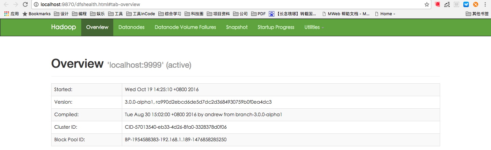

Hadoop-3.0.0-alpha1 安装文档
环境&介绍
系统环境：OS X EI Capitan
JDK版本：java version "1.8.0_73"
hadoop版本：hadoop-3.0.0-alpha1
资源来源：
jdk下载地址：Java SE Development Kit 8
hadoop下载地址：hadoop-3.0.0-alpha1
参考文档
前置准备
测试ssh 是否可以免密登录
$ ssh localhost
如果不可以，执行以下操作：
$ ssh-keygen -t dsa -P '' -f ~/.ssh/id_dsa
$ cat ~/.ssh/id_dsa.pub >> ~/.ssh/authorized_keys
$ chmod 0600 ~/.ssh/authorized_keys
安装过程
解压下载的 hadoop-3.0.0-alpha1.tar.gz
$ tar -zxf hadoop-3.0.0-alpha1.tar.gz
配置环境变量
$ vim ~/.bash_profile
# 在文件末尾添加
HADOOP_HOME=/Users/home/apache/hadoop-3.0.0-alpha1
JAVA_HOME=/Library/Java/JavaVirtualMachines/jdk1.8.0_73.jdk/Contents/Home
PATH=$PATH:$JAVA_HOME/bin:$HADOOP_HOME/bin:$HADOOP_HOME/sbin
# 保存并离开
:wq
# 使修改后的文件生效
$ source ~/.bash_profile
修改hadoop配置文件
$ cd $HADOOP_HOME/etc/hadoop
- 修改
core-site.xml文件：
<configuration>
<property>
<name>fs.defaultFS</name>
<value>hdfs://localhost:9999</value>
</property>
</configuration>
- 修改
hdfs-site.xml文件
<configuration>
<property>
<name>dfs.namenode.name.dir</name>
<value>/Users/violorch/apache/hadoop-3.0.0-alpha1/hadoop_name/</value>
</property>
<property>
<name>dfs.datanode.name.dir</name>
<value>/Users/violorch/apache/hadoop-3.0.0-alpha1/hadoop_data/</value>
</property>
<property>
<name>dfs.replication</name>
<value>1</value>
</property>
</configuration>
格式化一个新的分布式文件系统
$ hdfs namenode -format
启动namenode和datanode守护进程
$ start-dfs.sh
访问路径
